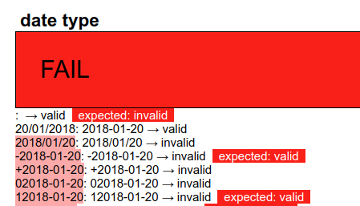

To test datatypes, we want to do something similar. We can collect in the
test elements a, possibly large, group of values of the datatype
to be tested, and then see if the system thinks they are valid values for that
type. For instance for the date datatype:
<test pass="" res="" req="invalid"/> <test pass="" res="" req="valid">2018-01-20</test> <test pass="" res="" req="invalid">2018/01/20</test> <test pass="" res="" req="valid">-2018-01-20</test> <test pass="" res="" req="invalid">+2018-01-20</test> <test pass="" res="" req="invalid">02018-01-20</test> <test pass="" res="" req="valid">12018-01-20</test>
and so on, and then calculate with the bind for the results:
<bind ref="test/@res" calculate="if(valid(.), 'valid', 'invalid')"/>
This would work fine, but for our purposes it has a difficulty. The
valid() function is an XForms 2.0 addition, and we want as litttle
as possible of the test suite infrastructure to depend on XForms 2.0 features
-- if anything is likely to fail it is the new features of the language before
the old features; all the more so since many of the tests will still work with
older versions of XForms and so can still be used on older implementations.
In XForms 1.1 (and later), if a control is bound to a value, and its value changes, an event is dispatched to the control announcing its validity. The standard XForms response is to change the display of the value to make it clear that it is now newly valid or invalid, but we can catch the event and record that it has happened for that value. The only difficulty that we have to deal with is that the event is only generated when the value changes.
So what we do is initially set the test value to some random value, it doesn't matter what it is, nor whether it is a valid or invalid value for the datatype, and when the system has initialised, only then change all the values to the data we are actually interested in. Then when the value changes, and the event is generated, we catch it and save the result. Something along these lines:
Store the value we are interested in in an attribute:
<test pass="" res="" req="valid" val="2018-01-20"/>Add an attribute to the root element to record whether the system has been initialised yet:
<tests pass="" started="" name="date type" xmlns="">And then use a bind to calculate the value of the elements:
<bind ref="test" type="date" calculate="if(../@started='', 'xxx', @val)"/>This ensures that initially the test elements have the value
'xxx', until the started attribute is changed, which we do on
initialisation, by catching the xforms-ready event:
<action ev:event="xforms-ready">
<setvalue ref="@started">yes</setvalue>
</action>Then in the output section, we can catch the validity events, and record them:
<repeat ref="test">
<output ref=".">
<action ev:event="xforms-valid">
<setvalue ref="@res">valid</setvalue>
</action>
<action ev:event="xforms-invalid">
<setvalue ref="@res">invalid</setvalue>
</action>
</output>
...Which might look like this:
